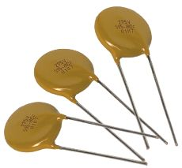

1.3.3. Варисторы и негиcторы

Варисторы — это компоненты, сопротивление которых уменьшается при повышении приложенного напряжения сверх определённого значения. Таким образом, сопротивления варисторов нелинейны. Основным материалом для производства варисторов обычно выступает карбид кремния. Когда приложенное к выводам варистора напряжение превысит фиксированный порог, происходит пробой окислов, которыми покрыты кристаллы карбида кремния, и возникает эмиссия носителей заряда с поверхностей этих кристаллов. Это вызывает уменьшение сопротивления варистора. Варистор можно включать в цепь в любой полярности. Вольтамперная характеристика (ВАХ) варисторов симметрична, что отражено на рис. 3.1.
Рис. 3.1. ВАХ варисторов.
Применение
Варисторы нашли широкое применение в качестве компонентов, которые включают после предохранителя параллельно питающей сети на входе электропитающих устройств с целью защиты последних от кратковременных перенапряжений, иногда возникающих в сети.
Низковольтные варисторы изготавливают на рабочее напряжение от 3 до 200 В и ток от 0,1 мА до 1 А; высоковольтные варисторы – на рабочее напряжение до 20 кВ.
Варисторы применяются для стабилизации и регулирования низкочастотных токов и напряжений, в аналоговых вычислителях – для возведения в степень, извлечения корней и других математических действий, в цепях защиты от перенапряжений (например, высоковольтные линии электропередачи, линии связи, электрические приборы) и др.
Высоковольтные варисторы применяются для изготовления ограничителей перенапряжения.
Как электронные компоненты, варисторы дёшевы и надёжны, способны выдерживать значительные электрические перегрузки, могут работать на высокой частоте (до 500 кГц). Среди недостатков – значительный низкочастотный шум и старение – изменение параметров со временем и при колебаниях температуры.
Параметры
- Вольт-амперная характеристика.
- Классификационное напряжение, В – напряжение при определённом токе (обычно изготовители указывают при 1 мА), практической ценности не представляет.
- Рабочее напряжение (Operating voltage) В (для пост. тока Vdc и Vrms – для переменного).
- Рабочий ток (Operating Current), А – диапазон – от 0,1 мА до 1 А.
- Максимальный импульсный ток (Peak Surge Current), А.
- Поглощаемая энергия (Absorption energy), Дж.
- Коэффициент нелинейности.
- Температурные коэффициенты (статич. сопротивления, напряжения, тока) – для всех типов варисторов не превышает 0,1 % на градус.
Негисторами называют специальные варисторы, вольтамперная характеристика которых имеет участок отрицательного сопротивления и симметрична. Микромощные негисторы применяют в микросхемах.